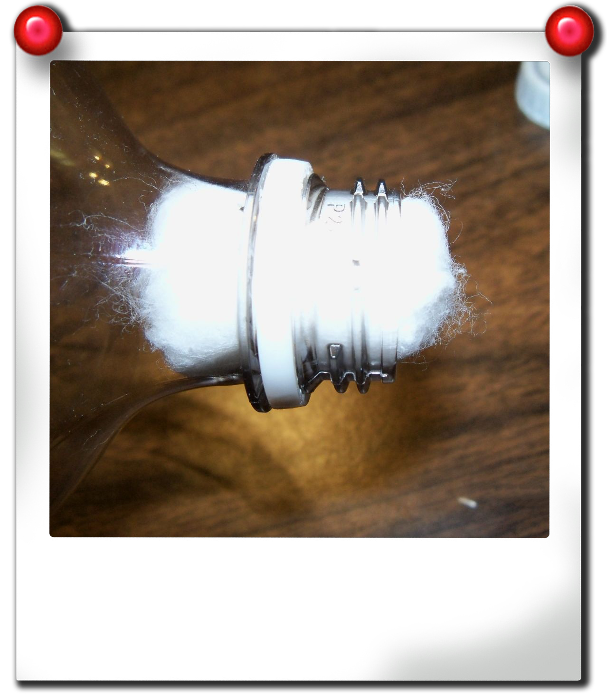
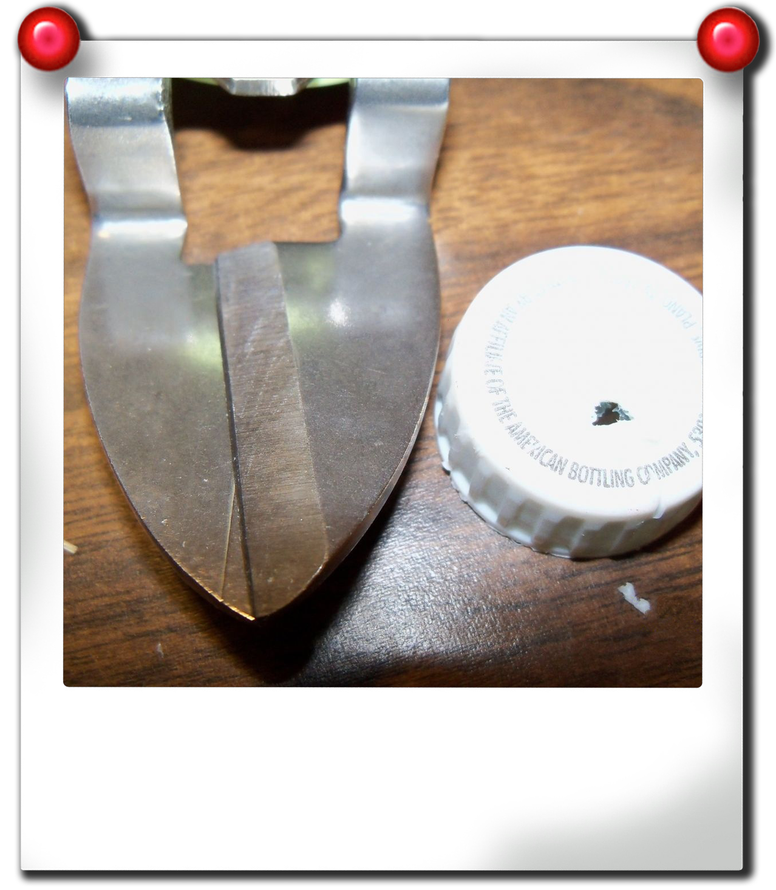
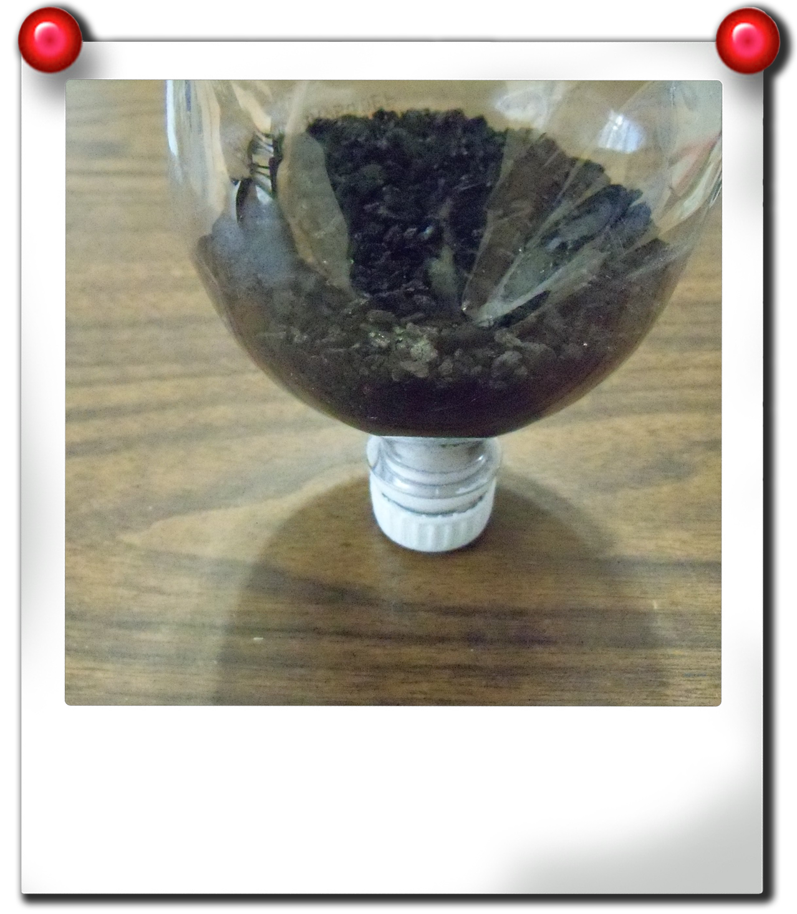
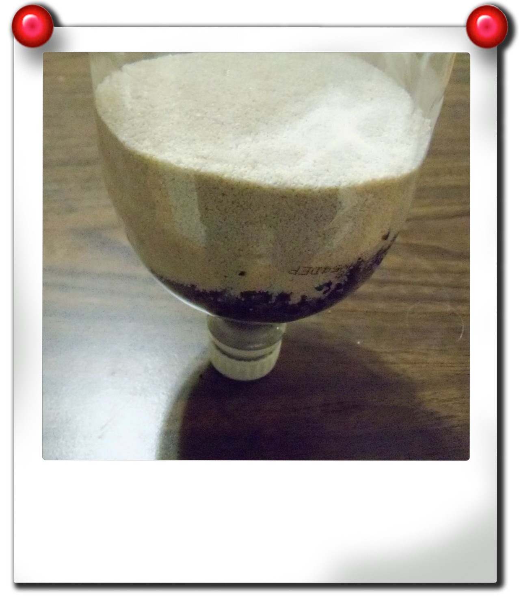
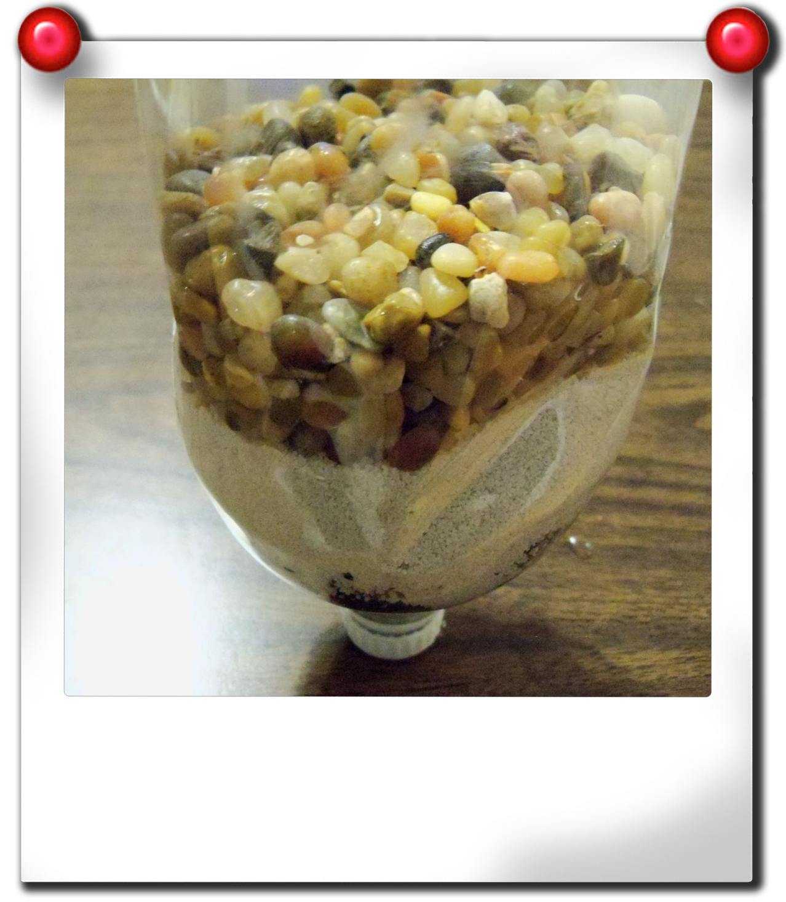

First, you will need something to put your magic filtering ingredients in. That's what the bottle is for. We used a 2-Liter bottle, but it can be any size depending on how much water you want to filter at a time. Cut the bottom part off so you have a large circular opening. This will be the "top" of your filter.
Next, take one or two cotton balls, and shove them into the bottleneck. This is the end that the water will pour through last.
If you're having trouble keeping the cotton balls from falling out, you can take the cap for the bottle and cut/poke/drill a hole in it (about a quarter inch) and screw the cap on on loosely.
Activated carbon, or charcoal, is commonly used for water filtration systems and aquariums. You can usually find it in the fish sections of pet stores and supermarkets. Activated carbon works through absorption--the charcoal attracts chemicals passing by, effectively trapping them. Because it may blacken your water, make sure to rinse the carbon off first. Then, you'll want to pour a decently sized layer into the bottle.
Sand can also be found in the fish sections of pet stores, and you may be able to find some in Home Depot. Pour a good layer of sand on top of the charcoal. This will catch any small particles of dirt or debris.
Surprise surprise, you can find gravel in the fish sections of pet stores, and you can find some at Home Depot. Pour your gravel on top of the sand.
Voila! Now get some mucky water flowing into your filter and watch it come out sparkling clean!
DISCLAIMER: We take no responsibilty for any health issues that could arise from drinking overly dirtied water.